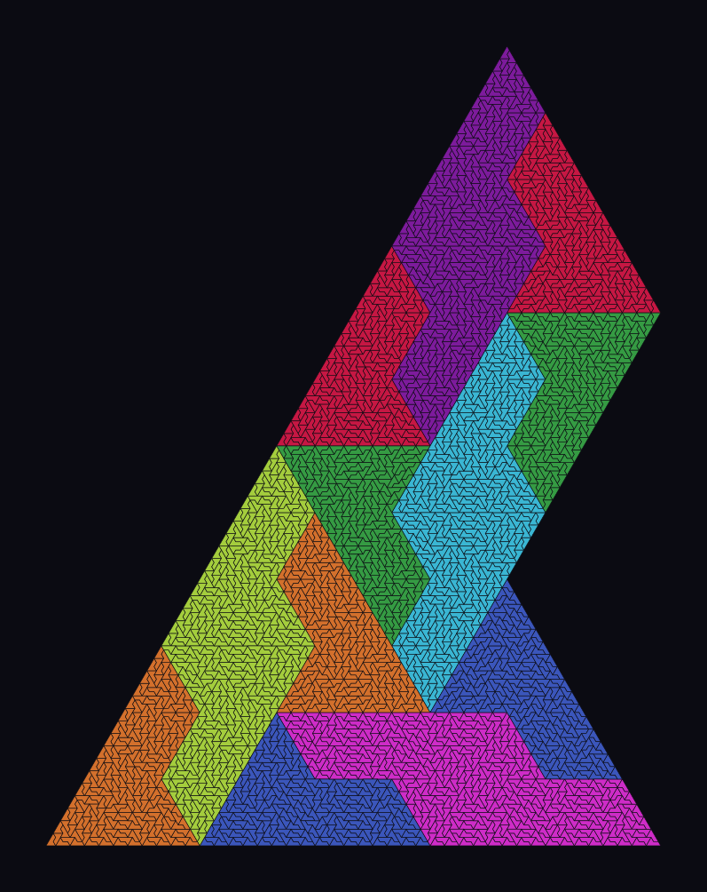

← the sphinx & the brute-force search
the sphinx fractal iterate the rep-4 dissection and the tile becomes its own picture
the sphinx is a hexiamond (six unit triangles) that is rep-4: four copies of it, at half the linear size, tile a double-size copy. i brute-forced that dissection from scratch — that story is here.
but the fun part is what happens if you keep going. take the double-size sphinx, swap each copy for a double-size sphinx, repeat. you get an iterated function system: four similarities, each contracting by 1/2, whose fixed set is the sphinx itself. the picture is genuinely self-similar — zoom into any corner and it's the same shape.
level 1 — the four copies

level 3

level 4

level 6

the four maps
each level-one copy is the sphinx moved by an isometry I j (a rotation or reflection of the triangular lattice, plus a translation). the whole double-size sphinx is just the sphinx scaled by 2, S. the contraction that carries the big sphinx into copy j is
and the fractal is the unique compact set fixed by {f₀, f₁, f₂, f₃}. the code finds the four I j by matching the brute-forced pieces back onto the original tile, then renders the recursion directly.
no magic numbers, no hand-drawn coordinates: the dissection came out of an exact-cover search, and the fractal is just that dissection applied to itself. one honest result, iterated, becomes an infinite object.